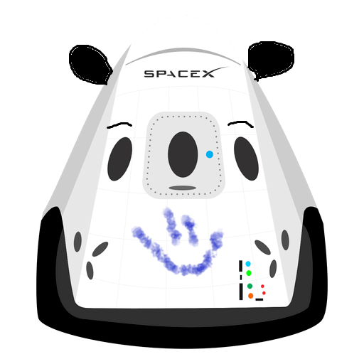

Hyperblog - version main
Tu blog maestro
Este es el titulo atractivo e interesante del post
Y este es el párrafo de inicio donde vamos a explicar las cosas increibles que se pueden hacer con ramas en Github.

Los blogs son la mejor forma de compartir información y tus ideas. Mucho mas que ir a conferencias o salir en Youtube. Excepto si eres un rockstar. Pero estadísticamente no lo eres... por ahora.
Suscribete y dale like